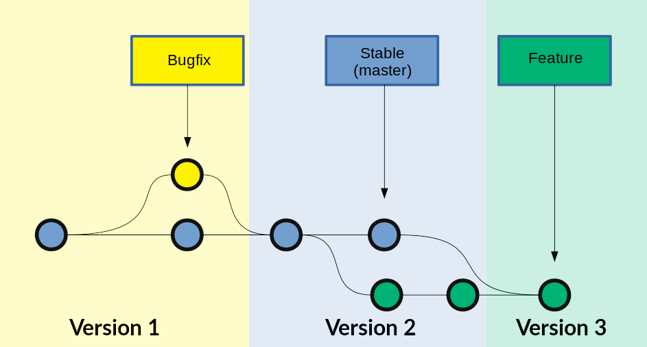
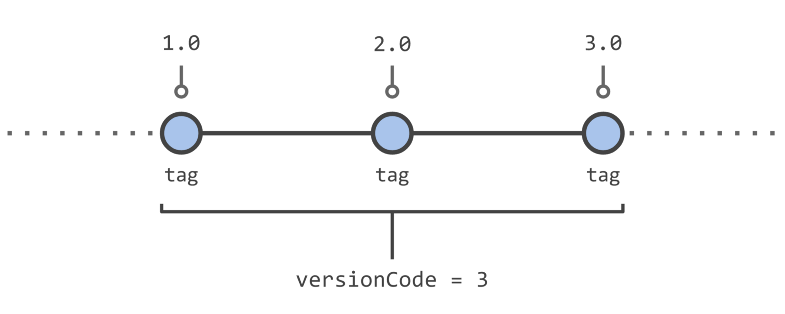
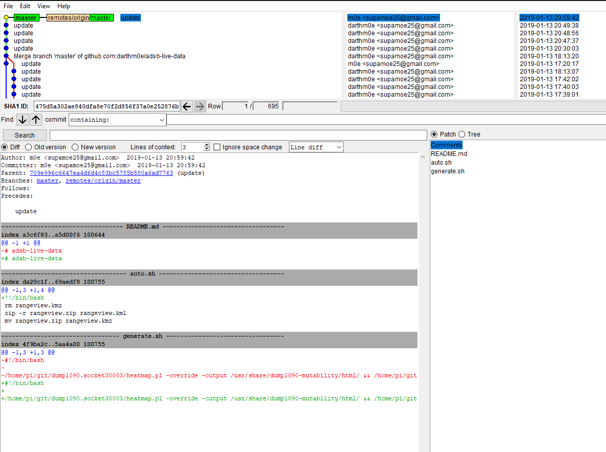
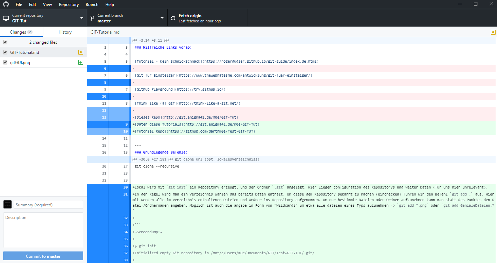

GIT Tutorial
Work in Progress ! ||| Made by m0e@2019 --- E42L
GIT TutorialHilfreiche Links vorab:Grundlegende Befehle:GrundlagenBranchingTagsAliase und AutovervollständigungAutocompletionAliasReset lokal RepositorySoftware (Windows oder MultiPlattform)Häufiger Workflowweitere Befehle
Hilfreiche Links vorab:
Offizielles GIT Buch -- Sehr gut, mehrsprachig
Tutorial - kein SchnickSchnack -- kurz und knackig
Github Playground -- inkteraktive Spielwiese
Daten diese Tutorials -- Repo des Tutorials
Tutorial Repo -- Das Beispielrepository
Grundlegende Befehle:
git init
git add . || git add
git commit -m "grund" || git commit -a -m "grund"
git remote add origin http://pfad.zum/repo.git
git push -u origin master (master ist hier der Name des Branch, also hier der Hauptbranch)
git clone url (opt. lokalesVerzeichniss)
git clone --recursive
Grundlagen
GIT ist ein relativ neues VCS (Version-Controll-System), welches im Unterschied zu vielen anderen Änderungen an Dateien und Ordnern nicht als Diffs (fortlaufende Liste der Änderung an Dateien) sondern erzeugt bei einem Commit einen Snapshot des Repository-"Dateisystems" Hierbei werden effizienter weise nur geänderte Dateien neu gespeichert. Auf unveränderte Dateien wird nur ein Verweis auf den jeweiligen Snapshot angelegt. Dieses Konzept vereinfacht unter anderem die Arbeit mit Branches (Grundlagen > Branching).

Lokal wird mit git init ein Repository erzeugt, und der Ordner .git angelegt. Hier liegen Konfigurationsdateien des Repositorys und weiter Daten (für uns hier unrelevant).
In der Regel wird man ein Verzeichnis wählen das bereits Daten enthält. Um diese dem Repository bekannt zu machen (einchecken) führen wir den Befehl git add . aus. Hiermit werden alle im Verzeichnis enthaltenen Dateien und Ordner ins Repository aufgenommen. Um nur bestimmte Dateien oder Ordner aufzunehmen kann man statt des Punktes den Datei-/Ordnernamen angeben. Möglich ist auch die Angabe in Form von "Wildcards" um etwa alle Dateien eines Typs auzunehmen -> git add *.png oder git add GenialeDateien.*
xxxxxxxxxx~Screendump:~$ git initInitialized empty Git repository in /mnt/c/Users/m0e/Documents/GIT/Test-GIT-TUT/.git/$ git add *.md
Unsere Dateien wurden jetzt zur Versionskontrolle (Staging Area) hinzugefügt, im Git Jargon staged oder staging genannt.
mit git status zeigt uns GIT diesen Zustand auch an:
xxxxxxxxxx~Screendump:~$ git statusOn branch masterInitial commitChanges to be committed:(use "git rm --cached <file>..." to unstage)new file: README.mdnew file: Test.md
Nachdem nun alle Dateien in der Staging Area gesammelt sind können wir einen Commit ausführen und die Dateien zum Repository hinzufügen.
git commit öffnet den Standard Texteditor mit einer ähnlichen Meldung:
xxxxxxxxxxGNU nano 2.7.4 File: /mnt/c/Users/m0e/Documents/GIT/Test-GIT-TUT/.git/COMMIT_EDITMSG# Please enter the commit message for your changes. Lines starting# with '#' will be ignored, and an empty message aborts the commit.# On branch master## Initial commit## Changes to be committed:# new file: README.md# new file: Test.md#
hier kann man noch weiter Kommentare einfügen, i.d.R. wird man die vorhanden Kommentare lassen, welches die Ausgabe von git status enthält. Hierdurch erkennt man besser was genau mit dem Commit geändert wurde. Gibt man zusätzlich den Schalter -v mit an wird noch ein DateiDiff der Commitmeldung hinzugefügt.
Bei kleinen Änderungen kann die Commit Nachricht auch direkt im BEfehl mitgegeben werden
xxxxxxxxxx$ git commit -m "Schneller Commit, kleine Bugfixes"[master (root-commit) f99b0dd] Schneller Commit, kleine Bugfixes2 files changed, 4 insertions(+)create mode 100644 README.mdcreate mode 100644 Test.md
Die Ausgabe darunter teilt uns nun mit das der Commit erfolgreich dem master Branch hinzugefügt wurde, die SHA-1 Checksumme (f99b0dd), die Commitmeldung, die geänderten Dateien und eine Angabe über die hinzugefügten oder entfernten Zeilen.
Für Dateien die bereits mit git add hinzugefügt wurden kann man später das Staging überspringen.
xxxxxxxxxx$ git commit -a -m "Schneller Commit, kleine Bugfixes, OHNE Staging"[master f205c80] Schneller Commit, kleine Bugfixes, OHNE Staging1 file changed, 3 insertions(+)
Normalerweise wird man im Umgang mit GIT einen Zentralen Server wie Github, Gitlab, Bitbucket oder selbsteghostet benutzen. Um unserem Lokalen Repository diesen Server bekannt zu machen führen wir den folgenden Befehl aus:
git remote add origin https://github.com/darthm0e/Test-GIT-TUT.git
Im Beispiel wird das Vorher angelegte Repository Test-GIT-TUT auf Github benutzt.
Wenn wir jetzt git push -u origin master ausführen werden unsere Daten des Commits auf den Remote Server (origin, Name wählbar) in den Master-Branch geladen. Hiermit können auch weiter Server oder Branches hinzugefügt werden.
git push -u developer nightly würde die Daten auf einen mit git remote als Developer in die Nightly-Branch laden.
xxxxxxxxxx$ git push -u origin masterUsername for 'https://github.com': supamoe25@gmail.comPassword for 'https://supamoe25@gmail.com@github.com':Counting objects: 7, done.Delta compression using up to 8 threads.Compressing objects: 100% (4/4), done.Writing objects: 100% (7/7), 612 bytes | 0 bytes/s, done.Total 7 (delta 0), reused 0 (delta 0)To https://github.com/darthm0e/Test-GIT-TUT.git* [new branch] master -> masterBranch master set up to track remote branch master from origin.
Gibt man nun jemandem den Link zum Repository, kann sich dieser den Inhalt anschauen, auf seinen Rechner laden, bearbeiten, änderungen hochladen (schreibrechte vorrausgesetzt) etc.
git clone <link> oder git clone --recursive <link>
lädt das Repository in einen Unterordner(Name des Repo) ins aktuelle Verzeichniss.
xxxxxxxxxx$ git clone https://github.com/darthm0e/Test-GIT-TUT.gitCloning into 'Test-GIT-TUT'...remote: Enumerating objects: 7, done.remote: Counting objects: 100% (7/7), done.remote: Compressing objects: 100% (4/4), done.remote: Total 7 (delta 0), reused 7 (delta 0), pack-reused 0Unpacking objects: 100% (7/7), done.
Mit git log bzw git log -p kann man sich alle Commits bzw alle Commits mit änderungen anzeigen lassen:
xxxxxxxxxx$ git logcommit f205c80841f3b37957101285fc6af5b1691cc81dAuthor: m0e <supamoe25@gmail.com>Date: Sat Jan 19 16:01:40 2019 +0100Schneller Commit, kleine Bugfixes, OHNE Stagingcommit f99b0dd5b53a0f66e893bf6cd269eca779851082Author: m0e <supamoe25@gmail.com>Date: Sat Jan 19 15:55:32 2019 +0100Schneller Commit, kleine Bugfixes(END)
xxxxxxxxxxgit log -pcommit f205c80841f3b37957101285fc6af5b1691cc81dAuthor: m0e <supamoe25@gmail.com>Date: Sat Jan 19 16:01:40 2019 +0100Schneller Commit, kleine Bugfixes, OHNE Stagingdiff --git a/Test.md b/Test.mdindex 980a0d5..d6baa93 100644--- a/Test.md+++ b/Test.md@@ -1 +1,4 @@Hello World!+++Was hinzugef<C3><BC>gtcommit f99b0dd5b53a0f66e893bf6cd269eca779851082Author: m0e <supamoe25@gmail.com>Date: Sat Jan 19 15:55:32 2019 +0100Schneller Commit, kleine Bugfixesdiff --git a/README.md b/README.mdnew file mode 100644index 0000000..8829e9f--- /dev/null+++ b/README.md@@ -0,0 +1,3 @@+Hello World !++Daten fuers GIT Tutdiff --git a/Test.md b/Test.mdnew file mode 100644index 0000000..980a0d5--- /dev/null+++ b/Test.md@@ -0,0 +1 @@+Hello World!(END)
Eine Übersicht über die vorhandenen Remote Repositorys gibt git remote -v
xxxxxxxxxx$ git remote -vorigin https://github.com/darthm0e/Test-GIT-TUT.git (fetch)origin https://github.com/darthm0e/Test-GIT-TUT.git (push)
Um die aktuellsten Änderungen ins lokale Repository zu übertragen führt man git pull aus. GIT versucht die neuen Commits aus dem Remote Repository zu holen und mit den lokalen Dateien zusammenzuführen.
Branching

git branch "branchname" -> Branch erstellen
git checkout "branchname" -> Zum Branch wechseln
git push --set-upstream origin "branchname" -> Branch hochladen
git checkout master -> Zurück zum master Branch
git merge "branchname" -> branch einchecken
git branch -d "brnachname" -> branch löschen
git push -> hochladen
Tags
In GIT (wie auch in anderen VersionControll-Systemen - VCS) können mit Hilfe von Tags wichtige Punkte in der Commit-Hitory markiert werden. Normalerweise werden hiermit ReleaseVersionen oder andere Meilensteine markiert.

Um sich die in einem Repository vorhandenn Tags anzeigen zu lassen wird git tag benutzt. Hiermit werden die Tags in alphabetischer Reihenfolge aufgelistet
xxxxxxxxxx$> git tag0.1helptesting
Um nur bestimmte Tags zu sehen kann man folgenden Befehl verwenden: git tag -l 'v1.4.2'
GIT unterscheidet 2 Arten von Tags, einfache (engl. lightweight) und kommentierte (engl. annotated) Ein normaler Tag ist lediglich ein Zeiger auf einen Commit. Der Tag bleibt mit dem Commit verbunden und wird auch von nachfolgenden Änderungen nicht beeinflusst. Ein Kommentierter Tag wird als vollwertiges Objekt in GIT gespeichert (ähnlich Commit) und umfasst eine Checksumme, Namen des Verfassers, die eMail Adresse das Datum und sowie eine Tag Nachricht. Desweiteren kann solch ein Tag mit GPG signiert werden.
Um nur bestimmte Tags zu sehen kann man folgenden Befehl verwenden: git tag -l 'v1.4.2'
git tag -> Tags anzeigen
git tag -a v1.2.3 -m "Version 1.2.3" -> Kommentierter Tag erstellen
git tag -s v1.5 -m 'my signed 1.5 tag' -> Tag mit GPG signieren
git push origin --tags -> Tags in Repo pushen
Aliase und Autovervollständigung
Autocompletion
Um für GIT Befehle eine Autovervollständigung zu erhalten, läd man (hier für BASH) das Script unter: Git-completion.bash
herunter, und fügt source ~/git-completion.bash zu .bashrc hinzu.
Alias
git config --global alias.upPush ´git add . ; git commit -a -m; git push -u origin´
Reset lokal Repository
git fetch origin
git reset –hard origin/master
Software (Windows oder MultiPlattform)
GitBash & GitGUI  ^GitGUI^ ^Hauptfenster^
Github Desktop  ^Github^ ^Desktop^ ^Hauptfenster^
Häufiger Workflow
Während der Entwicklungsarbeit wird der Workflow meistens in etwa so aussehen:
- Aktuellen master-Branch vom Server downloaden (vorher mit git status sicherstellen, dass man sich auf dem master-Branch befindet. Wenn nicht: git checkout master):
#> git pull - Einen neuen Branch für das kommende Feature anlegen:
#> git checkout -b meinfeature master - [Änderungen am Code durchführen]
- Geänderte und neue Dateien stagen:
#> git add . - Änderungen committen:
#> git commit -m "Changes xyz" - Jetzt den Branch auf den Server laden, wenn gewünscht:
#> git push -u origin meinfeature - … oder direkt in dem master wechseln:
#> git checkout master - (nochmals aktuellen Code ziehen - zur Sicherheit)
#> git pull - Eigenen Code mit master zusammenführen:
#> git merge meinfeature - Nicht mehr benötigten Branch löschen:
#> git branch -d meinfeature - Aktualisierten master auf den Server pushen:
#> git push
- Fertig
weitere Befehle
git stat
git diff
git fetch
git mv
git show
git remote show origin
git remote rm <name>
git rebase
~ Made by m0e@2019 --- enigma42Labs ~